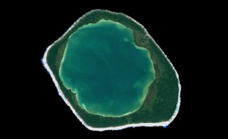

French Polynesia Tuamotu Archipelago FS9/FSX Addon Scenery
Group B
Niau

Niau is located at 60 km west of Fakarava. The atoll of Niau forms a complete ring and has a completely enclosed lagoon. The water color of the lagoon is green a little and it is said the water quality is hypersaline. The lagoon might be connected with the open sea underground. Otherwise, it seems that the lagoon dries up. Niau is a strange island.

Size of Niau relative to Rangiroa

A strange atoll